1004E10 ENGINE, REMOVED - REMOVE CYLINDER HEAD AND OIL SUMP FOR INSPECTION - INCLUDES POSITIONING ON STAND AND REMOVAL
- Path
- Procedures > 10 ENGINE > 1004 ENGINE AND POWER UNIT > 1004E ENGINE ASSEMBLY INSPECTION AND REPAIRS > 1004E10 ENGINE, REMOVED - REMOVE CYLINDER HEAD AND OIL SUMP FOR INSPECTION - INCLUDES POSITIONING ON STAND AND REMOVAL
- Kind
- repair procedure (removal / refitting; the operation number is the code)
- Applies to
- all engines; all production periods
- Interactive page
- https://sloeber94.github.io/elrnDB-fCrm/en/#/194002123
Applies to: engines: 2.2; all production periods
Op. 1004D40 ENGINE - POSITION ON STAND AND REMOVE
1. Undo the bolt (1a) and remove the engine oil dipstick tube (1b).
2. Undo the bolts (2a) and remove the injection control unit (2b).
3. Undo the nuts and the bolts (3a) and remove the throttle body complete with wiring holder bracket (3b).
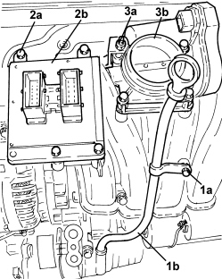
Applies to: engines: 2.2; all production periods
1. Undo the fastenings and remove the intake chamber.
2. Loosen the band, undo the nut and remove the degassing pipe.
3. Undo the fixing bolts and remove the fuel distribution manifold complete with injectors.
4. Remove the injector sealing bushes from the cylinder head.
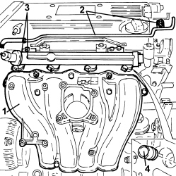
Applies to: engines: 2.2; all production periods
1. Undo the nuts (1a) and remove the engine lifting bracket (1b).
2. Undo the fastenings and remove the exhaust manifold heat shield.
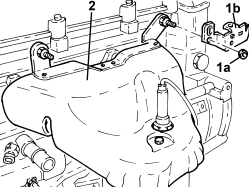
Applies to: engines: 2.2; all production periods
1. Undo the nuts (1a) and remove the exhaust manifold with built in catalytic converter complete with Lambda sensor (1b).
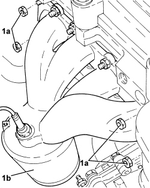
Applies to: engines: 2.2; all production periods
1. Undo the fastenings and remove the connector holder bracket, gearbox side.
2. Undo the fastenings and remove the earth loom (2a) and the condenser (2b).
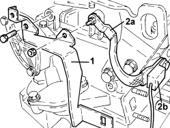
Applies to: engines: 2.2; all production periods
1. Undo the bolts (1a) and remove the ignition coil module (1b).
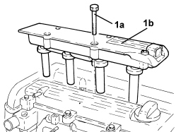
Applies to: engines: 2.2; all production periods
1. Undo the bolts (1a) and remove the cam cover (1b).
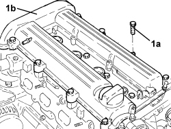
Applies to: engines: 2.2; all production periods
1. Unscrew and remove the hydraulic timing chain tensioner.
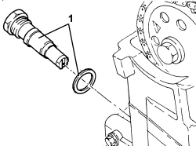
Applies to: engines: 2.2; all production periods
1. Undo the cap (1a) and undo the upper bolt securing the timing chain fixed pad (1b).
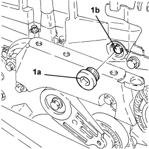
Applies to: engines: 2.2; all production periods
1. Undo the bolts (1a) and remove the timing chain upper pad (1b).
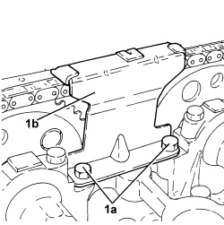
Applies to: engines: 2.2; all production periods
1. Undo the bolts fixing the toothed wheels to the camshafts using the keys shown in the diagram for counter-torque.
2. Release the chain (2a) and remove the two toothed wheels (2b).
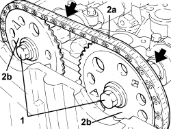
Applies to: engines: 2.2; all production periods
1. Undo the bolts (1a), (1b) and remove the cylinder head.
- Remove the gasket.
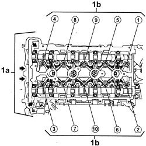
Applies to: engines: 2.2; all production periods
1. Use the belt tensioner (1a) and remove the auxiliary units belt (1b).
2. Undo the bolts (2a) and remove the air conditioner compressor (2b).
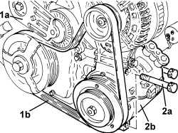
Applies to: engines: 2.2; all production periods
- Rotate the engine through 180° on the overhaul stand.
1. Undo the bolts fixing the oil sump to the crankcase.
2. Remove the sealant working at the two points (2a) and remove the oil sump (2b).
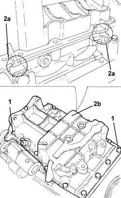
Applies to: engines: 2.4 JTD 20v; all production periods
Op. 1004D40 ENGINE - POSITION ON STAND AND REMOVE
Position a suitable container for collecting the engine lubricant.
1. Unscre the engine oil sump plug and drain the lubrication system.
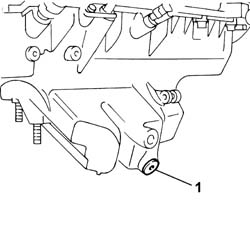
Applies to: engines: 2.4 JTD 20v; all production periods
1. Disconnect the electrical connection for the timing sensor.
Description | Connector | |
|---|---|---|
1 | Timing sensor | K047 |
2. Disconnect the electrical connections for the injectors.
Description | Connector | |
|---|---|---|
2 | Injector | N070A |
Description | Connector | |
|---|---|---|
2 | Injector | N070E |
Description | Connector | |
|---|---|---|
2 | Injector | N070D |
Description | Connector | |
|---|---|---|
2 | Injector | N070C |
Description | Connector | |
|---|---|---|
2 | Injector | N070B |
3. Disconnect the glow plug electrical connections.
Description | Connector | |
|---|---|---|
3 | Heater plugs | A040A |
Description | Connector | |
|---|---|---|
3 | Heater plugs | A040E |
Description | Connector | |
|---|---|---|
3 | Heater plugs | A040D |
Description | Connector | |
|---|---|---|
3 | Heater plugs | A040C |
Description | Connector | |
|---|---|---|
3 | Heater plugs | A040B |
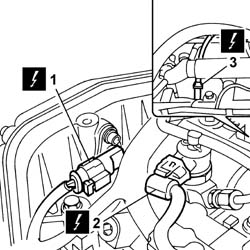
Applies to: engines: 2.4 JTD 20v; all production periods
1. Disconnect the electrical connection for the turbo sensor.
Description | Connector | |
|---|---|---|
1 | Supercharging sensor | K082 |
2. Disconnect the electrical connection for the fuel pressure regulator.
Description | Connector | |
|---|---|---|
2 | Fuel pressure regulator | N077 |
3. Disconnect the electrical connection for the fuel pressure sensor.
Description | Connector | |
|---|---|---|
3 | Fuel pressure sensor | K083 |

Applies to: engines: 2.4 JTD 20v; all production periods
1. Disonnect the electrical connection for the EGR solenoid valve.
Description | Connector | |
|---|---|---|
1 | EGR solenoid valve | L030 |
2. Disconnect the electrical connection for the engine rpm sensor.
Description | Connector | |
|---|---|---|
2 | Rpm sensor | K046 |

Applies to: engines: 2.4 JTD 20v; all production periods
1. Disconnect the electrical connection for the coolant temperature sensor.
Description | Connector | |
|---|---|---|
1 | Engine coolant temperature sensor/sender unit | K036 |
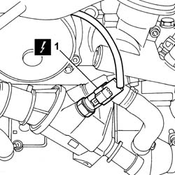
Applies to: engines: 2.4 JTD 20v; all production periods
1. Undo the retaining bolts (1a) and remove engine wiring (1b), releasing from any clips that are present.
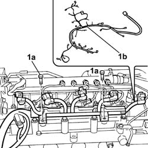
Applies to: engines: 2.4 JTD 20v; all production periods
1. Fit the flywheel retaining tool in its seat on the engine block.
Description | Code | Function | |
|---|---|---|---|
1 | Flywheel lock | 1.860.846.001 | Prevent the rotation of the crankshaft |

Applies to: engines: 2.4 JTD 20v; all production periods
1. Undo the fixing bolts (1a) and remove the crankshaft pulley (1b).
2. Undo the fixing bolt (2a) and remove the single drivebelt fixed tensioner (2b).
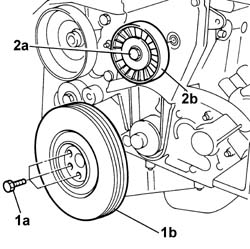
Applies to: engines: 2.4 JTD 20v; all production periods
1. Undo the fixing bolts (1a) and remove the protective timing covers (1b).

Applies to: engines: 2.4 JTD 20v; all production periods
1. Undo connectors (1a) and remove fuel pipes (1b) from the injectors to the single fuel pipe.
2. Undo connector (2a) of fuel pipe (2b) from pressure pump to single fuel pipe.
3. Undo the fixing bolts (3a) and remove the single fuel pipe (3b).
4. Undo the fixing bolts (4a) and remove the rigid pipe (4b).

Applies to: engines: 2.4 JTD 20v; all production periods
1. Unscrew bolt (1a), open band (1b) and remove the rigid recirculation pipe (1c).

Applies to: engines: 2.4 JTD 20v; all production periods
1. Open the securing band (1a) and disconnect the oil vapour pipe (1b) from the cylinder head.
2. Open the securing band (2a) and disconnect the oil vapour pipe (2b) from the engine block.
3. Open the securing band (3a) and disconnect the oil vapour recovery pipe (3b) from the engine oil sump.
4. Undo bolts (4a) and remove the oil vapour recovery tank with pipes (4b).

Applies to: engines: 2.4 JTD 20v; all production periods
1. Undo the fixing bolts (1a) and remove the engine oil dipstick pipe assembly (1b).
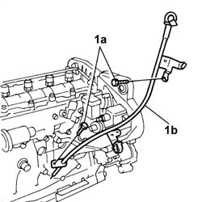
Applies to: engines: 2.4 JTD 20v; all production periods
1. Undo retaining clips (1a) and prise up the fuel recovery pipe from injectors (1b).

Applies to: engines: 2.4 JTD 20v; all production periods
1. Disconnect fuel pipe (1a), unscrew bolts (1b), then remove the fuel return manifold (1c).
2. Undo connector (2a) and remove the rigid fuel pipe (2b) from the pressure pump.

Applies to: engines: 2.4 JTD 20v; all production periods
1. Loosen the moving timing tensioner nut.
2. Remove the toothed timing belt.
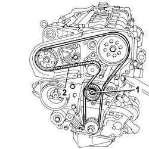
Applies to: engines: 2.4 JTD 20v; all production periods
1. Lock the rotation of the pressure pump drive pulley using two bolts.
2. Undo the pressure pump drive pulley nut.
Undo the two bolts for locking the rotation of the pressure pump drive pulley fitted previously.
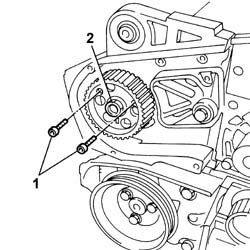
Applies to: engines: 2.4 JTD 20v; all production periods
1. Use extractor (1a) to remove the pressure pump pulley (1b).
Description | Code | Function | |
|---|---|---|---|
1a | Extractor | 1.860.854.001 | Pressure pump control pulley removal |
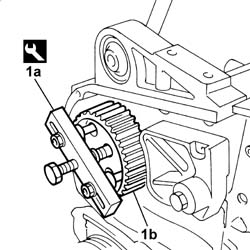
Applies to: engines: 2.4 JTD 20v; all production periods
1. Undo the fixing nuts (1a) and remove the pressure pump (2b).
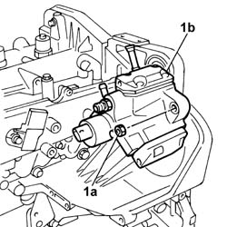
Applies to: engines: 2.4 JTD 20v; all production periods
1. Undo the fixing bolts (1a) and remove the power steering pump pulley (1b).

Applies to: engines: 2.4 JTD 20v; all production periods
1. Undo the bolts (1a) fixing the power steering pump (1a) to the support.
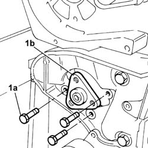
Applies to: engines: 2.4 JTD 20v; all production periods
1. Undo the fixing bolts (1a) and remove the pressure pump mounting (1b).
2. Remove the power assisted steering pump.
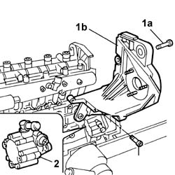
Applies to: engines: 2.4 JTD 20v; all production periods
1. Undo bolts (1a) securing rigid EGR pipe (1b).
Recover the underlying metal sealing gasket.
2. Undo the fixing nuts (2a) and disconnect the intake manifold (2b).
Recover the underlying metal sealing gasket.
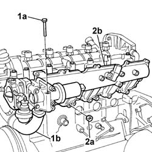
Applies to: engines: 2.4 JTD 20v; all production periods
1. Open bands (1a) securing the coolant hoses to the heat exchanger (1b).
2. Undo the fixing bolts (2a) and remove the EGR heat exchanger (2b).

Applies to: engines: 2.4 JTD 20v; all production periods
1. Undo the bolts (1a) and remove the water pump delivery pipe (1b).
Remove the metal gasket.
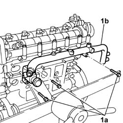
Applies to: engines: 2.4 JTD 20v; all production periods
1. Undo the bolts (1a) and remove the brackets (1b) and the injectors (1c).

Applies to: engines: 2.4 JTD 20v; all production periods
1. Unscrew the glow plugs and remove.
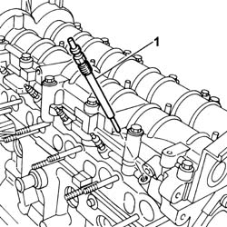
Applies to: engines: 2.4 JTD 20v; all production periods
1. Undo retaining bolts (1a) and remove vacuum pump (1b).
2. Remove the metal gasket.
3. Undo the bolts (3a) and remove the engine oil filler fitting (3b).
4. Remove the metal gasket.

Applies to: engines: 2.4 JTD 20v; all production periods
1. Undo the fixing bolts (1a) and remove the single cylinder head extension (1b).
2. Remove the metal gasket.
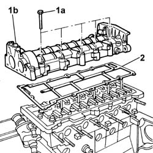
Applies to: engines: 2.4 JTD 20v; all production periods
1. Undo the fixing bolts (1a) and remove the thermostat unit (1b).
Remove the gasket.

Applies to: engines: 2.4 JTD 20v; all production periods
1. Undo the fixing bolts (1a) and remove the coolant pump (1b).
Remove the metal gasket.
2. Undo the fixing bolts (2a) and remove the side protective timing cover (1b).
3. Remove the valve rockers.

Applies to: engines: 2.4 JTD 20v; all production periods
1. Loosen the bolts fixing the cylinder head to the engine block
2. Remove the cylinder head.
Remove the locating bushes.
Remove the metal gasket.
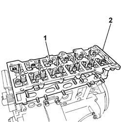
Applies to: engines: 2.4 JTD 20v; all production periods
Rotate the engine through 180° on the overhaul stand.
1. Undo and remove the engine oil level sensor.
2. Undo the fixing bolts (2a) using tools (2b).
Description | Code | Function | |
|---|---|---|---|
2b | Undo the bolts securing the engine oil sump | 1.860.833.001 | Loosen/Tighten front and rear crankcase sump bolts |
Description | Code | Function | |
|---|---|---|---|
2b | Undo the bolts securing the engine oil sump | 1.860.834.001 | Loosen/Tighten crankcase sump side bolts |
3. Use tool (3a) to cut the sealant strip from the engine oil sump (3b) and then remove.

Applies to: engines: 2.4 JTD 20v; all production periods
1. Undo the fixing bolts (1a) and remove the engine oil intake duct (1b).

Applies to: engines: 2.4 JTD 20v; all production periods
1. Undo the bolt (1a) (left hand thread) and remove the toothed drive pulley (1b).

Applies to: engines: 2.4 JTD 20v; all production periods
1. Undo the fixing bolts (1a) and remove the clutch assembly (1b).

Applies to: engines: 2.4 JTD 20v; all production periods
1. Undo retaining bolts (1a) and remove flywheel (1b).
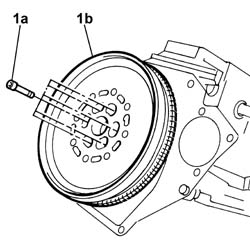
Applies to: engines: 2.4 JTD 20v; all production periods
1. Remove the flywheel lock.
Description | Code | Function | |
|---|---|---|---|
1 | Flywheel lock | 1.860.846.001 | Prevent the rotation of the crankshaft |
2. Undo the fixing bolts (2a) and remove the engine flywheel protection (2b).

Applies to: engines: 2.4 JTD 20v; all production periods
See descriptions
1. Adjust the automatic belt tensioner using the tool to slacken the single engine component drivebelt.
Description | Code | Function | |
|---|---|---|---|
1 | Spanner | 1.860.966.000 | Automatic belt tensioner rotation for single components belt |
2. Insert the tool in the special opening to keep the automatic belt tensioner in the "fixed" position.
Description | Code | Function | |
|---|---|---|---|
2 | Lock | 1.870.645.000 | Automatic belt tensioner retainer for single components belt |
3. Release the cap for the single engine components belt tensioner.
4. Loosen the bolt for the single engine components belt tensioner.
5. Remove the single engine components drive belt.
6. Remove the engine components belt pulley cap.
7. Undo the bolt (7a) and remove the engine components single belt pulley (7b).

Applies to: engines: 2.4 JTD 20v; all production periods
1. Undo the bolts (1a) and remove the timing drive belt guards (1b).
2. Undo the bolts (2a) and remove the power unit reaction rod bracket (2b).
3. Loosen the timing belt tensioner nut.
4. Release the timing drive belt.

Applies to: engines: 2.4 JTD 20v; all production periods
1. Disconnect the fuel supply pipe from the filter from the pressure pump.
2. Disconnect the pressure pump side connector for the supply pipe from the pressure pump to the manifold using a suitable spanner.
3. Undo the connector (3a) using a suitable spanner and remove the supply pipe from the pressure pump to the manifold (3b).
4. Loosen the pressure pump support side bolts.
5. Loosen the pressure pump support front bolts.
6. Undo the bolts (6a) and remove the oil dipstick assembly (6b).
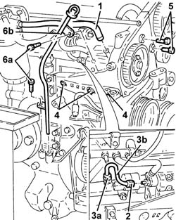
Applies to: engines: 2.4 JTD 20v; all production periods
1. Undo the connector (1a) and disconnect the turbocharger oil inlet pipe (1b).

Applies to: engines: 2.4 JTD 20v; all production periods
1. Undo the bolts (1a) and remove the turbocharger oil outlet pipe guard (1b).
2. Disconnect the turbocharger oil outlet pipe from the oil sump.
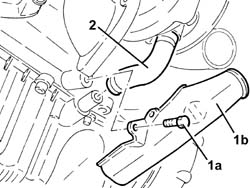
Applies to: engines: 2.4 JTD 20v; all production periods
1. Undo the nuts (1a) and disconnect the exhaust gas recirculation pipe (1b).
2. Remove the seal.
3. Undo the pipe retainer bracket bolt.
4. Undo the bolt fixing the exhaust manifold bracket to the cylinder block/crankcase.
5. Undo the nuts (5a) and remove the exhaust manifold (5b) complete with turbocharger and E.G.R. valve.
6. Remove the seal.

Applies to: engines: 2.4 JTD 20v; all production periods
1. Disconnect the oil vapour recovery pipe from the cylinder block/crankcase.
2. Disconnect the condensation oil recovery pipe from the crankcase sump.
3. Undo the nuts (3a) and remove the oil vapour separator (3b) complete with pipes.
4. Remove the bracket.
5. Disconnect the return pipe from the fuel filter to the return manifold.
6. Undo the nuts (6a) and remove the fuel filter assembly (6b).
7. Undo the bolts (7a) and remove the tappet cover (7b) complete with gasket.
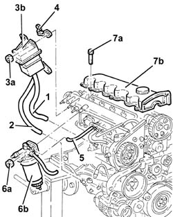
Applies to: engines: 2.4 JTD 20v; all production periods
1. Disconnect the water/oil heat exchanger coolant supply pipe from the thermostat.
2. Disconnect the water/oil heat exchanger coolant outlet pipe from the manifold.
3. Undo the bolts (3a) and remove the cylinder head assembly (3b).
4. Remove the cylinder head gasket.
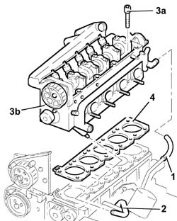
Applies to: engines: 2.4 JTD 20v; all production periods
Rotate the engine through 180° on the overhaul stand.
1. Undo the bolts (1a) and remove the plates (1b) connecting the crankcase sump to the intermediate shaft support.
2. Undo the front and rear bolts (2a) fixing the crankcase sump using the tool (2b).
Description | Code | Function | |
|---|---|---|---|
2b | Spanner | 1.860.834.000 | Loosen/Tighten front and rear engine oil sump bolts |
3. Undo the side bolts (3a) fixing the crankcase sump using the tool (3b).
Description | Code | Function | |
|---|---|---|---|
1b | Spanner | 1.860.833.000 | Loosen/Tighten engine oil sump side bolts |
4. Remove the crankcase sump.

Applies to: engines: 1.9 JTD 16v; all production periods
Op. 1004D40 ENGINE - POSITION ON STAND AND REMOVE
1. Unscrew the drain plug on the crankcase sump and drain the engine oil.
1. Disconnect the electrical connection from the rpm sensor.
Description | Connector | |
|---|---|---|
1 | Rpm sensor |
2. Disconnect the electrical connection from the engine oil level sensor.
Description | Connector | |
|---|---|---|
2 | Engine oil level sensor |
3. Disconnect the electrical connection for the engine oil pressure switch.
Description | Connector | |
|---|---|---|
3 | Insufficient engine oil pressure sensor |
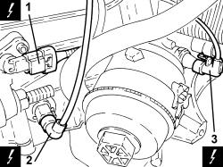
Applies to: engines: 1.9 JTD 16v; all production periods
1. Disconnect the electrical connection from the throttle control shaft valve for the inlet ducts.
Description | Connector | |
|---|---|---|
1 | Flow modifier solenoid valve |
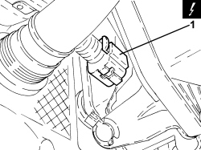
Applies to: engines: 1.9 JTD 16v; all production periods
1. Disconnect the electrical connection for the EGR solenoid valve.
Description | Connector | |
|---|---|---|
1 | E.G.R. solenoid valve |
2. Disconnect the electrical connection for the air temperature and pressure sensor.
Description | Connector | |
|---|---|---|
2 | Air pressure - temperature sensor |
3. Disconnect the electrical connection for the fuel pressure regulator.
Description | Connector | |
|---|---|---|
3 | Fuel pressure regulator |
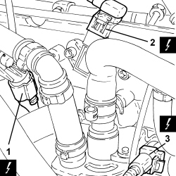
Applies to: engines: 1.9 JTD 16v; all production periods
1. Disconnect the electrical connection from the engine temperature sensor.
Description | Connector | |
|---|---|---|
1 | Engine coolant temperature sensor/sender unit |
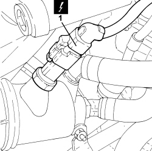
Applies to: engines: 1.9 JTD 16v; all production periods
1. Disconnect the electrical connection from the throttle casing.
Description | Connector | |
|---|---|---|
1 | Integrated throttle casing actuator |
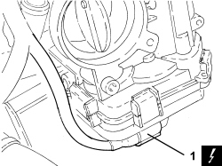
Applies to: engines: 1.9 JTD 16v; all production periods
1. Disconnect the electrical connection from the fuel pressure sensor.
Description | Connector | |
|---|---|---|
1 | Fuel pressure sensor |
2. Disconnect the electrical connection from the fuel pressure regulator on the injector rail.
Description | Connector | |
|---|---|---|
2 | Fuel pressure regulator on rail |
3. Disconnect the electrical connections from the injectors.
Description | Connector | |
|---|---|---|
3 | Injector |
4. Disconnect the electrical connections from the heater plugs.
Description | Connector | |
|---|---|---|
4 | Heater plugs |
5. Disconnect the electrical connection from the cam angle sensor.
Description | Connector | |
|---|---|---|
5 | Timing sensor |
7. Disconnect the electrical connection from the air conditioning compressor engagement electromagnet.
Description | Connector | |
|---|---|---|
7 | Air conditioning compressor engagement electro-magnet | See L020 AIR CONDITIONING COMPRESSOR ENGAGEMENT ELECTRO-MAGNET |
8. Disconnect the electrical connection for the thermal coupling indicating catalytic converter overheating.
Description | Connector | |
|---|---|---|
8 | Upstream particle filter (DPF) temperature sensor | See K189 UPSTREAM PARTICULATE FILTER TEMPERATURE SENSOR (DPF) |
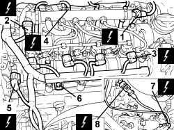
Applies to: engines: 1.9 JTD 16v; all production periods
1. Apply a wrench to the moving tensioner (1a), then prise up and remove the auxiliary drive belt (1b).
2. Undo the bolts and remove the service pulley on the crankshaft.
3. Undo the bolts and remove the protective timing cover.
4. Undo the bolt and remove the auxiliary drivebelt fixed tensioner.
5. Undo the bolts and remove the power unit rigid support mount, timing side.
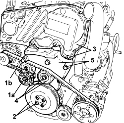
Applies to: engines: 1.9 JTD 16v; all production periods
1. Loosen the moving timing belt tensioner bolt (1a), then release and remove the toothed timing drive belt (1b).
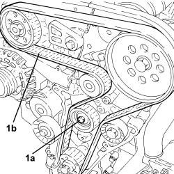
Applies to: engines: 1.9 JTD 16v; all production periods
1. Unscrew bolts (1a), loosen collars (1b), then remove the turbocharger air inlet pipe (1c) complete with engine oil vapour recovery pipe.
2. Undo the bolts (2a) and remove the engine oil dipstick tube assembly (2b).
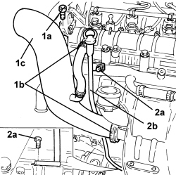
Applies to: engines: 1.9 JTD 16v; all production periods
- Undo the retaining nuts and remove the exhaust manifold heat shield.
1. Loosen collar, unscrew bolts (1b) and disconnect the exhaust gas intake pipe from the exhaust manifold to the E.G.R. heat exchanger (1c), exhaust manifold side.
2. Undo the connector and disconnect the engine oil supply pipe to the turbocharger, crankcase side.
3. Undo the bolts and disconnect the engine oil return pipe from the turbocharger, crankcase side.
4. Undo the nuts and remove the turbocharger and exhaust manifold assembly with catalytic converter.
- Remove the exhaust manifold gasket.
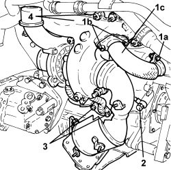
Applies to: engines: 1.9 JTD 16v; all production periods
1. Loosen the bands and disconnect the pipes from the thermostat.
2. Unscrew bolts (2a), loosen collars (2b) and remove the engine oil heat exchanger rigid duplex delivery and return pipe (2c).
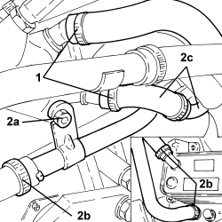
Applies to: engines: 1.9 JTD 16v; all production periods
1. Loosen the band and disconnect the engine oil vapour recovery pipe from the engine oil filler.
2. Undo the bolts, then remove the vacuum pipes.
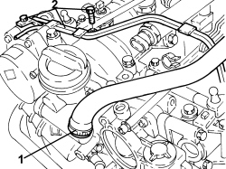
Applies to: engines: 1.9 JTD 16v; all production periods
1. Loosen the collars and disconnect the engine oil vapour recovery pipe and the engine oil recovery pipe.
2. Undo the nuts and remove the bracket complete with engine oil vapour separator and vacuum reservoir.
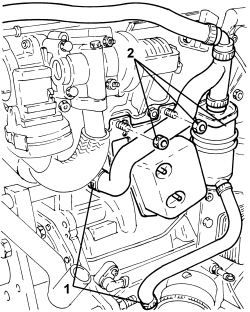
Applies to: engines: 1.9 JTD 16v; all production periods
1. Disconnect the linkage for the throttle control shaft valve for the inlet ducts.
2. Undo the nuts and remove the throttle control shaft valve for the inlet ducts.
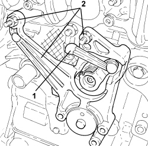
Applies to: engines: 1.9 JTD 16v; all production periods
1. Unscrew the connectors and remove the pipes from the fuel manifold to the injectors.
2. Undo the connectors and remove the pipe from the pressure pump to the fuel manifold.
3. Loosen the band and disconnect the fuel return pipe from the fuel manifold, fuel return manifold side.
4. Undo the bolts and remove the single fuel manifold pipe.
5. Loosen the collar and disconnect the fuel return pipe from the injectors, fuel return manifold side.
6. Push the clips by hand, then disconnect the fuel return pipe from the injectors, injector side, and remove.
Applies to: engines: 1.9 JTD 16v; all production periods
1. Undo the injector bracket retaining nuts.
2. Remove the injectors (2a) complete with brackets using the tools (2b).
Tool | Description | Function | Validity |
|---|---|---|---|
1870897300 | Extractor | Removing injectors | 1.9 JTD 8V 1.9 JTD 16V 2.4 JTD 20V |
Applies to: engines: 1.9 JTD 16v; all production periods
1. Undo the bolts (1a) and remove the camshaft housing assembly (1b).
2. Remove the gasket.
2. Remove the valve rockers.
Applies to: engines: 1.9 JTD 16v; all production periods
1. Unscrew the glow plugs and remove.
Applies to: engines: 1.9 JTD 16v; all production periods
1. Undo the bolts (1a) and remove the cylinder head assembly (1b).
2. Remove the gasket.
3. Remove the locating bushes.
Applies to: engines: 1.9 JTD 16v; all production periods
- Rotate the engine through 180° on the overhaul stand.
1. Undo the bolts securing the air conditioner compressor mount to the engine oil sump.
2. Undo the bolts fixing the crankcase sump.
3. Cut the crankcase sump sealant using the tool.
Tool | Description | Function | Validity |
|---|---|---|---|
1870718000 | Blade | Cut the crankcase sump sealant |
4. Remove the crankcase sump.
Applies to: engines: 1.9 JTD 8v; all production periods
Op. 1004D40 ENGINE - POSITION ON STAND AND REMOVE
1. Disconnect the electrical connection for the air conditioning compressor engagement solenoid.
Description | Connector | |
|---|---|---|
1 | Air conditioning compressor engagement solenoid | See L021 AIR CONDITIONING COMPRESSOR ENGAGEMENT SOLENOID VALVE |
Applies to: engines: 1.9 JTD 8v; all production periods
1. Disconnect the electrical connection for the minimum engine oil pressure switch.
Description | Connector | |
|---|---|---|
1 | Insufficient engine oil pressure sensor |
2. Undo the fixing nuts and disconnect the electrical connections for the alternator.
Description | Connector | |
|---|---|---|
2 | Alternator |
Applies to: engines: 1.9 JTD 8v; all production periods
1. Disconnect the electrical connection for the rpm sensor.
Description | Connector | |
|---|---|---|
1 | Rpm sensor |
2. Disconnect the electrical connection for the engine oil level sensor.
Description | Connector | |
|---|---|---|
2 | Engine oil level sensor |
Applies to: engines: 1.9 JTD 8v; all production periods
1. Disconnect the glow plug electrical connections.
Description | Connector | |
|---|---|---|
1 | Heater plugs |
2. Disconnect the electrical connection for the fuel pressure regulator.
Description | Connector | |
|---|---|---|
2 | Fuel pressure regulator on rail |
Applies to: engines: 1.9 JTD 8v; all production periods
1. Disconnect the electrical connections for the injectors.
Description | Connector | |
|---|---|---|
1 | Injector |
2. Disconnect the electrical connection for the E.G.R. solenoid valve.
Description | Connector | |
|---|---|---|
2 | EGR solenoid valve |
3. Disconnect the electrical connection for the turbo sensor.
Description | Connector | |
|---|---|---|
3 | Supercharging sensor | See K082 SUPERCHARGING SENSOR |
Applies to: engines: 1.9 JTD 8v; all production periods
1. Disconnect the electrical connection for the air temperature sensor.
Description | Connector | |
|---|---|---|
1 | Engine coolant temperature sensor/sender unit |
2. Disconnect the electrical connection for the throttle casing.
Description | Connector | |
|---|---|---|
2 | Integrated throttle casing actuator |
3. Disconnect the electrical connection for the fuel pressure sensor.
Description | Connector | |
|---|---|---|
3 | Fuel pressure sensor |
Applies to: engines: 1.9 JTD 8v; all production periods
- Remove the engine wiring.
1. Loosen the bands and remove the heater water supply and return pipes.
2. Undo the nut (2a), loosen the bands (2b) and (2c) and remove the duplex pipes (2d).
Applies to: engines: 1.9 JTD 8v; all production periods
1. Disconnect the pipes from the vacuum reservoir.
2. Undo the bolts and remove the mounting complete with vacuum reservoir.
Applies to: engines: 1.9 JTD 8v; all production periods
1. Undo the bolts and remove the protective timing cover.
Applies to: engines: 1.9 JTD 8v; all production periods
1. Undo the bolts and remove the timing belt (1b) side guard (1a).
2. Undo the bolts (2a), disconnect the hose (2b) and remove the water pump rigid return pipe (2c).
3. Undo the bolts (3a) and remove the engine oil dipstick tube (3b).
Applies to: engines: 1.9 JTD 8v; all production periods
- Undo the bolts and disconnect the E.G.R. exhaust gas intake hose from the exhaust manifold.
1. Undo the turbocharger engine oil supply pipe and disconnect it.
2. Undo the bolts and disconnect the engine oil return hose from the turbocharger.
3. Undo the nuts (3a) and remove the exhaust manifold - turbocharger assembly complete with precatalyzer (3b).
- Remove the gasket.
Applies to: engines: 1.9 JTD 8v; all production periods
1. Adjust the moving tensioner (1a) using a spanner to slacken the single engine component drivebelt (1b) tension and remove it.
2. Undo the bolts (2a) and remove the crankshaft pulley (2b).
3. Undo the bolt (3a) and remove the auxiliary drive belt fixed tensioner (3b).
Applies to: engines: 1.9 JTD 8v; all production periods
1. Undo the bolts (1a) and remove the rigid power unit support (1b).
Applies to: engines: 1.9 JTD 8v; all production periods
1. Undo the moving tensioner (1a) bolt and remove the timing belt (1b).
Applies to: engines: 1.9 JTD 8v; all production periods
1. Undo the pressure pump support side bolts.
2. Undo the connectors (2a), (2b) and remove the rigid pipe from the pressure pump to the fuel manifold (2c).
3. Loosen the bands (3a) and (3b) and remove the pipe from the pressure pump to the fuel return manifold pipe (3c).
Applies to: engines: 1.9 JTD 8v; all production periods
1. Undo the front bolt (1a) and remove the pressure pump mounting (1b) complete with alternator (1c).
Applies to: engines: 1.9 JTD 8v; all production periods
1. Undo the bolts (1a) and remove the tappet cover (1b) complete with gasket.
2. Undo the bolts (2a) and remove the cylinder head assembly (2b).
3. Remove the cylinder head gasket.
Applies to: engines: 1.9 JTD 8v; all production periods
1. Undo the bolts (1a) and remove the mounting (1b) complete with air conditioning compressor (1c).
Applies to: engines: 1.9 JTD 8v; all production periods
- Rotate the engine through 180° on the overhaul stand.
1. Undo the bolts fixing the oil sump to the gearbox.
2. Unscrew the bolts (2a) securing the sump to the crankcase, timing side and gearbox side, using the tool (2b).
Tool | Description | Function | Validity |
|---|---|---|---|
1860833000 | Spanner | Loosen/tighten the timing side and gearbox side bolts securing the crankcase sump | 1.9 JTD 8V |
3. Undo the side bolts fixing the crankcase sump.
4. Remove the sealant using the tool (4a) and remove the engine oil sump (4b).
Tool | Description | Function | Validity |
|---|---|---|---|
1870718000 | Blade | Cut the crankcase sump sealant |
Applies to: engines: 1.8; all production periods
1. Adjust the moving tensioner (1a) using a spanner, insert a suitable locking pin and remove the auxiliary drive belt (1b).
2. Undo the fixing bolt and remove the moving tensioner (1a) and locking pin.
Applies to: engines: 1.8; all production periods
1. Undo the bolts (1a) and remove the rigid power unit support (1b).
Applies to: engines: 1.8; all production periods
1. Undo the bolts (1a) and remove the upper cover (1b) and the intermediate cover (1c) protecting the timing belt.
Applies to: engines: 1.8; all production periods
1. Disconnect the electrical connection for the air conditioning compressor.
Description | Connector | |
|---|---|---|
1 | Air conditioning compressor engagement electro-magnet | See L020 AIR CONDITIONING COMPRESSOR ENGAGEMENT ELECTRO-MAGNET |
2. Disconnect the electrical connection for the minimum oil pressure switch.
Description | Connector | |
|---|---|---|
2 | Insufficient engine oil pressure sensor |
3. Disconnect the electrical connection for the phase transformer solenoid, exhaust side.
Description | Connector | |
|---|---|---|
3 | Exhaust side phase transformer solenoid valve |
- Release the wiring from the retaining cover.
Applies to: engines: 1.8; all production periods
1. Disconnect the electrical connection for the upper Lambda sensor.
Description | Connector | |
|---|---|---|
1 | Lambda sensor on catalyzer |
2. Disconnect the electrical connection for the exhaust side timing sensor.
Description | Connector | |
|---|---|---|
2 | Exhaust side timing sensor |
3. Disconnect the electrical connection for the inlet side timing sensor.
Description | Connector | |
|---|---|---|
3 | Inlet side timing sensor |
4. Disconnect the electrical connection for the thermostat temperature regulator.
Description | Connector | |
|---|---|---|
4 | Electronic thermostat |
5. Disconnect the electrical connection for the air temperature sensor.
Description | Connector | |
|---|---|---|
5 | Engine coolant temperature sensor/sender unit |
6. Disconnect the electrical connection from the ignition coil module.
Description | Connector | |
|---|---|---|
6 | Ignition module |
7. Undo the bolt and release the earth lead.
Applies to: engines: 1.8; all production periods
1. Undo the double shank bolt (1a) and the bolt (1b) and remove the starter motor (1c).
Applies to: engines: 1.8; all production periods
1. Disconnect the electrical connection for the engine oil level sensor.
Description | Connector | |
|---|---|---|
1 | Engine oil level sensor |
2. Disconnect the electrical connection for the detonation sensor.
Description | Connector | |
|---|---|---|
2 | Detonation sensor |
3. Disconnect the electrical connection for the rpm sensor.
Description | Connector | |
|---|---|---|
3 | Rpm sensor |
4. Disconnect the electrical connection for the modular intake chamber control actuator.
Description | Connector | |
|---|---|---|
4 | Variable geometry solenoid valve |
Applies to: engines: 1.8; all production periods
1. Disconnect the electrical connection for the throttle casing.
Description | Connector | |
|---|---|---|
1 | Integrated throttle casing actuator |
2. Disconnect the electrical connection of the fuel vapour flow enablement solenoid valve.
Description | Connector | |
|---|---|---|
2 | Fuel vapour recovery solenoid valve |
3. Disconnect the electrical connection for the phase transformer solenoid, inlet side.
Description | Connector | |
|---|---|---|
3 | Inlet side phase transformer solenoid valve |
Applies to: engines: 1.8; all production periods
1. Disconnect the electrical connection for the injectors.
Description | Connector | |
|---|---|---|
1 | Injector |
2. Disconnect the electrical connection for the injection control unit.
Description | Connector | |
|---|---|---|
2 | Engine management control unit |
- Release the wiring from the various fastenings and remove it.
Applies to: engines: 1.8; all production periods
1. Disconnect the rapid connector for the throttle body coolant supply pipe, thermostat mounting side.
Applies to: engines: 1.8; all production periods
1. Release the clips and remove the corrugated oil vapour supply hose from the tappet cover to the throttle body.
2. Loosen the bands and disconnect the throttle body heater water supply and return pipes.
3. Undo the bolts and remove the throttle body from the intake chamber.
Applies to: engines: 1.8; all production periods
1. Undo the bolts and remove the injection-ignition control unit from the intake chamber.
Applies to: engines: 1.8; all production periods
1. Undo the bolts and remove the intake chamber complete with injectors.
Applies to: engines: 1.8; all production periods
1. Undo the bolts and remove the engine oil dipstick tube.
2. Unscrew the bolts securing the exhaust manifold heat shield and remove it.
Applies to: engines: 1.8; all production periods
1. Undo the fastenings and remove the exhaust manifold-catalytic converter and mounting bracket.
- Remove the gasket from the cylinder head.
Applies to: engines: 1.8; all production periods
1. Undo the bolts and remove the rigid rear water pump return pipe, complete with seal.
Applies to: engines: 1.8; all production periods
1. Fit the tool on the crankshaft flange.
Tool | Description | Function | Validity |
|---|---|---|---|
1860815000 | Flange | Crankshaft rotation | 1.8 |
Applies to: engines: 1.8; all production periods
1. Undo the bolt (1a), remove the washer (1b) and the auxiliary drive belt pulley (1c), using the tool fitted previously on the crankshaft for counter-torque.
Applies to: engines: 1.8; all production periods
1. Undo the bolts (1a) and remove the lower protective timing cover (1b).
Applies to: engines: 1.8; all production periods
1. Using a spanner (1a), rotate the moving tensioner (1b) in a clockwise direction until the pin (1d) locking the tensioner can be inserted in the opening (1c).
2. Remove the timing belt.
Applies to: engines: 1.8; all production periods
1. Remove the ignition coil cover.
2. Undo the bolts (2a) and remove the ignition coil module (2b).
Applies to: engines: 1.8; all production periods
1. Undo the bolts (1a) and remove the tappet cover (1b) complete with gasket.
Applies to: engines: 1.8; all production periods
1. Undo the bolts (1a) and remove the cylinder head assembly (1b).
- Remove the gasket.
Applies to: engines: 1.8; all production periods
Applies to: engines: 1.8; all production periods
- Rotate the engine through 180 degrees.
1. Undo the bolts fixing the oil sump to the engine block.
2. Cut the sealant using the tool
Tool | Description | Function | Validity |
|---|---|---|---|
1870718000 | Blade | Cut the crankcase sump sealant |
3. Remove the oil sump applying leverage at the edges.
Topics linked from this page (29)
- 1004D40 ENGINE - POSITION ON STAND AND REMOVE
- A010 ALTERNATOR
- A031 IGNITION MODULE
- A040 HEATER PLUGS
- K017 LAMBDA SENSOR ON CATALYZER
- K030 INSUFFICIENT ENGINE OIL PRESSURE SENSOR
- K032 ENGINE OIL LEVEL SENSOR
- K036 ENGINE COOLANT TEMPERATURE SENSOR/SENDER UNIT
- K044 AIR PRESSURE - TEMPERATURE SENSOR
- K046 RPM SENSOR
- K047 TIMING SENSOR
- K050 DETONATION SENSOR
- K083 FUEL PRESSURE SENSOR
- K106 INTAKE SIDE TIMING SENSOR
- K107 EXHAUST SIDE TIMING SENSOR
- K189 UPSTREAM PARTICULATE FILTER TEMPERATURE SENSOR (DPF)
- L010 FUEL VAPOUR RECOVERY SOLENOID VALVE
- L015 VARIABLE GEOMETRY SOLENOID VALVE
- L020 AIR CONDITIONING COMPRESSOR ENGAGEMENT ELECTRO-MAGNET
- L030 EGR SOLENOID VALVE
- L064 FLOW MODIFYING SOLENOID VALVE
- M010 ENGINE MANAGEMENT CONTROL UNIT
- N070 INJECTOR
- N075 INTEGRATED THROTTLE CASING ACTUATOR
- N077 FUEL PRESSURE REGULATOR
- N086 ELECTRONIC THERMOSTAT
- N087 FUEL PRESSURE REGULATOR ON RAIL
- N092 PHASE SHIFTER SOLENOID VALVE ON INTAKE SIDE
- N093 PHASE SHIFTER SOLENOID VALVE ON EXHAUST SIDE
Topics that link to this page (5)
- 1004E40 ENGINE REMOVED GENERAL OVERHAUL
- 1004E42 ENGINE REMOVED, GENERAL OVERHAUL EXCLUDING WHERE PRESENT INJECTION PUMP OR PRESSURE PUMP AND TURBOCHARGER
- 1020A24 CRANKCASE OIL SUMP - R.R CLEAN SURFACES FOR SEALANT APPLICATION WITH ENGINE OR INTERFERING COMPONENTS REMOVED
- 1024A10 CRANKSHAFT - R.R WITH ENGINE REMOVED - CHECK AND, IF NECESSARY, REPLACE MAIN JOURNALS AND CRANKPINS
- 1028H14 PISTON CONNECTING ROD SET - R.R. WITH ENGINE AND CYLINDER HEAD(S) REMOVED